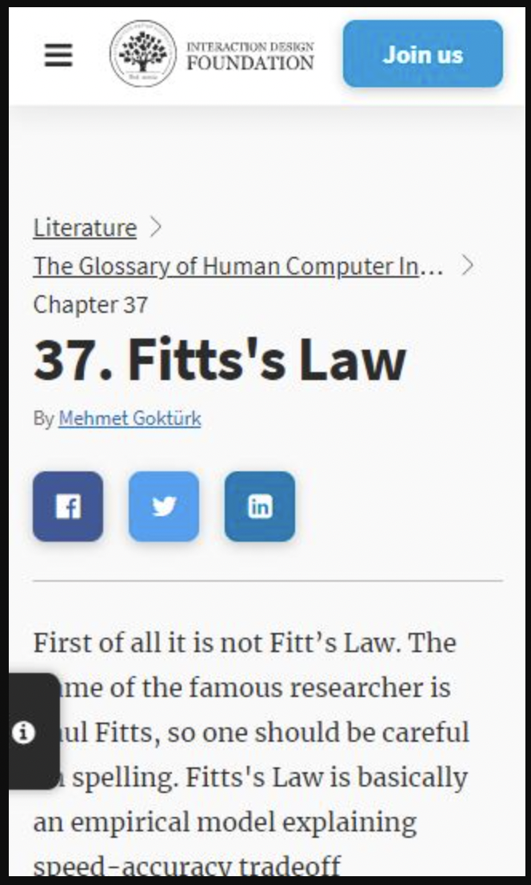
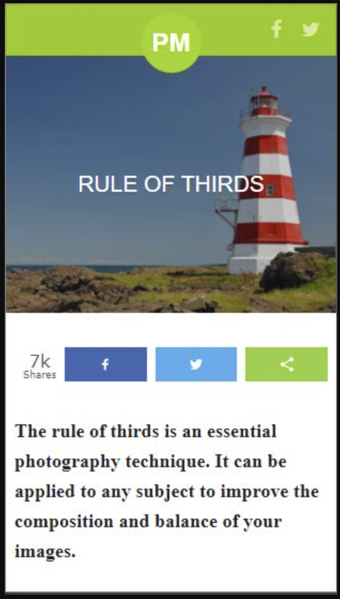
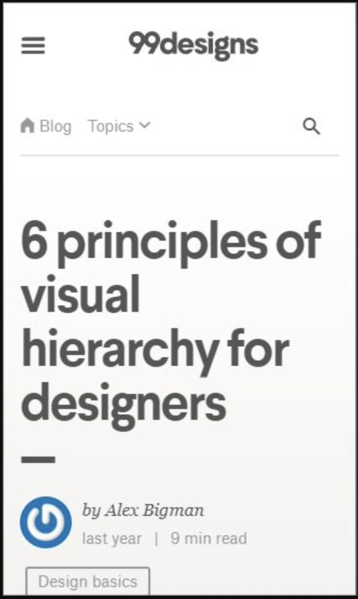

Fitt's Law
 Interaction-design.com
This law basically states that the faster the movement of your mouse and the
smaller the target the more of a chance there is to be an error or wrongly
clicking. However, the bigger the target and the shorted the distance the more accurate you will be.
The Rule of Thirds
 photographymad.comThis is directed to a site about photography. However, I found through my research that
the same principles can be appled to a webpage as well.
To briefily explain what The rule of three is simply put. Deviding up your images with two horizontal
and two vertical lines to better place the object you a capturing to make it more asthetically pleasing.
Visual Hierarchy
 99designs.com This website I found teaches some great tips on visual Hierarchy.
They have done a great job organizing the content, and displaying in a very pleasant way.